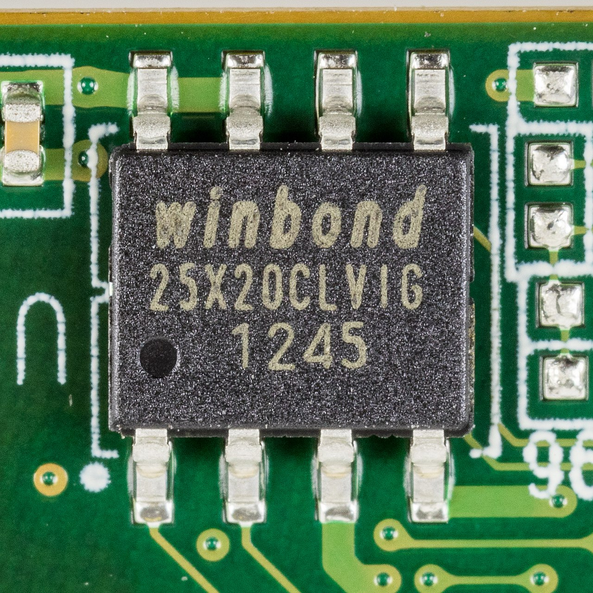
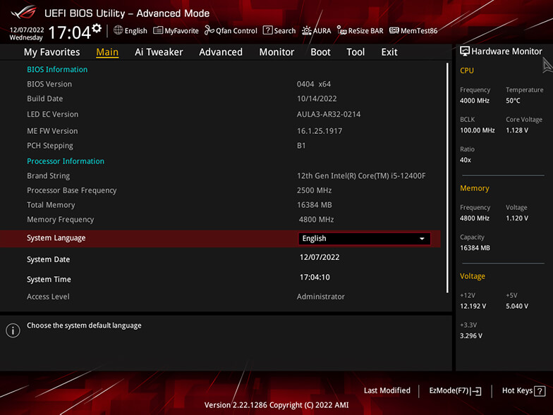
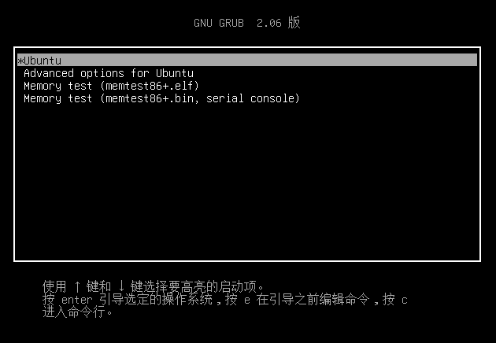

<div style="display: flex; justify-content: center; align-items: center; height: 700px;"> <div style="text-align: center; padding: 40px; background-color: white; border: 2px solid rgb(0, 63, 163); border-radius: 20px; box-shadow: 0 0 20px rgba(0,0,0,0.1);"> <h1 style="font-size: 48px; font-weight: bold; margin-bottom: 20px; color: #333;">CS130 Operating System Tutorial</h1> <p style="font-size: 24px; color: #666;">OS and Hardware</p> <p style="font-size: 16px; color: #999; margin-top: 20px;">Hengyu Ai | 2024-11-05</p> </div> </div> <!--s--> <div class="middle center"> <div style="width: 100%"> # Part.1 OS and Hardware </div> </div> <!--v--> ## "Genisis" of Computer - Before power on, the computer is just a piece of metal and plastic. <!-- .element: class="fragment" --> - Nothing could happen. <!-- .element: class="fragment" --> - After power on, the computer launches many programs and suddenly becomes a powerful machine. <!-- .element: class="fragment" --> - Wow, big bang! <!-- .element: class="fragment" --> - So what happened? <!-- .element: class="fragment" --> <!--v--> ## Try to Explain Explain by what we've learned before: Where is the program stored? <!-- .element: class="fragment" --> 1. RAM? RAM is volatile, it will lose data when power off. <!-- .element: class="fragment" --> 2. CPU? CPU is just a processor, it can't store data, and cache is also volatile. <!-- .element: class="fragment" --> 3. External storage. <!-- .element: class="fragment" --> If we are still thinking with the prerequisites of OS... <!-- .element: class="fragment" --> - Reading from external storage needs system calls. <!-- .element: class="fragment" --> - OS is not running yet. <!-- .element: class="fragment" --> - Try loading from external storage. <!-- .element: class="fragment" --> - Infinite loop. <!-- .element: class="fragment" --> There must be something else. <!-- .element: class="fragment" --> <!--v--> ## Hardware Finds a Way Somewhere on the motherboard: <p></p> <!-- .element: class="fragment" --> - A NOR flash chip on the motherboard. Inside the chip, there is a small program pre-installed by the manufacturer. <!-- .element: class="fragment" --> - This piece of code checks the hardware and finds if there is a device containing a bootable program. <!-- .element: class="fragment" --> - The program in the NOR flash is called the BIOS (and now UEFI). <!-- .element: class="fragment" --> - Pre-installed, so there may be some custom settings from the manufacturer. (Remember the logo when booting?) <!-- .element: class="fragment" --> <!--v--> ## Booting BIOS/UEFI - The motherboard is not made by the CPU manufacturer. <!-- .element: class="fragment" --> - Just add more conventions for booting. (checkout architecture specification) <!-- .element: class="fragment" --> - BIOS: Basic Input/Output System <!-- .element: class="fragment" --> - There are more and more devices with various interfaces. <!-- .element: class="fragment" --> - UEFI: Unified Extensible Firmware Interface <!-- .element: class="fragment" --> <!--v--> ## Booting BIOS/UEFI (Cont.) <div style="text-align: center; margin-top: 20px;"> <p></p> <p style="font-size: 30px; margin-top: 10px;">UEFI can even display a fancy GUI.</p> </div> <!--v--> ## BIOS/UEFI Booting Process <div class="fragment"> Legacy BIOS: - Read boot information from a legacy partitioning scheme: MBR (Master Boot Record) - MBR is the first sector of storage, containing bootloader and partition table. - Due to size limitation, MBR can only handle a maximum of 2TB storage. - 512 bytes bootloader will be loaded into memory and executed. </div> <div class="fragment"> UEFI: - Read boot information from a GPT (GUID Partition Table) partitioning scheme. - GPT is a more modern partitioning scheme, supporting larger storage devices. - UEFI firmware will load the bootloader from the EFI System Partition (ESP). - The bootloader is an EFI application, which is a file in the ESP (ESP must be formatted as FAT) </div> <span> <code>sudo cfdisk /dev/\<disk dir\> </code>, <code>efibootmgr -u</code>, <code>ls /sys/firmware/efi/efivars/</code> </span> <!-- .element: class="fragment" --> <!--v--> ## A Taste of Booting How can we try make a minimal bootloader after understanding hardware specifications? If there are no real, physical devices, we can use virtual ones. $\to$ QEMU, an open-source hardware emulator. <!-- .element: class="fragment" --> <div class="fragment"> ```asm ; stage1.asm ; just a bootable sector ; do nothing hang: ; infinite loop jmp hang ; this sector must be 512 bytes times 510-($-$$) db 0 db 0x55 ; legacy BIOS boot signature db 0xAA ; legacy BIOS boot signature ``` </div> <!--v--> ## Better Bootloader It's mentioned above that the bootloader is a less-than-512-byte file. <!-- .element: class="fragment" --> Therefore, we can't do much in the bootloader. <!-- .element: class="fragment" --> But we can load a larger program from the disk, and let it boot the OS. <!-- .element: class="fragment" --> Alreadly invented. Try out GRUB (GRand Unified Bootloader). <!-- .element: class="fragment" --> <p></p> <!-- .element: class="fragment" --> <!--s--> <div class="middle center"> <div style="width: 100%"> # Part.2 PintOS Booting Process </div> </div> <!--v--> ## loader.S - MBR can only contain a very tiny bootloader - But it still can load the kernel from the disk - x86 processor starts from real mode, which is 16-bit, with very limited memory access - C compiler can't generate code for real mode - So we have a bootloader written in assembly What `loader.S` does: - scan through the partition table - find partition type `0x80` (bootable) `read_mbr`, `check_partition`... - load the kernel into memory `load_kernel` - jump to `start.S` <!--v--> ## start.S - Real mode is not suitable for running the kernel, e.g. virtual memory is not enabled - To switch to protected mode: - set up GDT (Global Descriptor Table), `lgdt` at line 139 - enable A20 line, line 77 - disable interrupts, line 131 `cli` (interrupts will be enabled after we initialize the interrupt controller, re-enabled in `main.c` line 119 `thread_start()`) After switching to protected mode, we can't directly access memory by physical address. We need **page directory and page table**. line 84 to line 124 in `start.S` The last action in page table setting up is to update the CR3 (Control Register 3) register, which is the base address of the page directory. In `userprog/pagedir.c`, we can see the `pagedir_activate` function, which is used to update the CR3 register to switch between different page directories for different processes. This is critical for process isolation. <!--v--> ## start.S (Cont.) Whether the CPU is in Real Mode or in Protected Mode is defined by the lowest bit of the CR0 or MSW register. So we turn on some switches and modify the register to switch to protected mode. (line149 to 151) Then we have protected mode, and we can run some C code, jump to `main` in `init.c` Now all the memory access is virtual, MMU (Memory Management Unit) will translate the virtual address to physical address by the page directory and page table. <!--v--> ## init.c In `start.S`, we created a small page directory mapping 64MB of memory. The addressing capability of the x86 processor is 32-bit, so we can access 4GB of memory. Now we need to map more memory. In `init.c`, `paging_init` function is called to create a page directory for 1GB of kernel space, user space is not mapped in `init_page_dir`. <!--s--> <div style="display: flex; justify-content: center; align-items: center; height: 700px; "> <div style="text-align: center; padding: 40px; background-color: white; border-radius: 20px; box-shadow: 0 0 20px rgba(0,0,0,0.1);"> <div style="display: inline-block; padding: 20px 40px; border-radius: 10 px; margin-bottom: 20px;"> <h1 style="font-size: 48px; font-weight: bold; margin: 0; color: rgb(16, 33, 89)">Thanks for Listening</h1> </div> <p style="font-size: 24px; color: #666; margin: 0;">Any questions?</p> </div> </div>